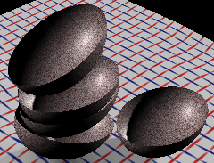
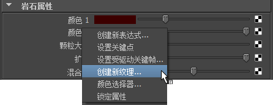
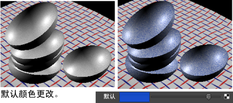
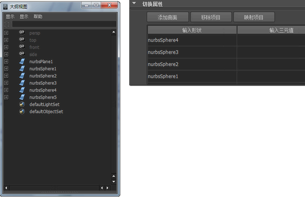
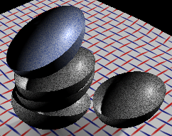
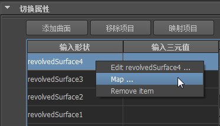
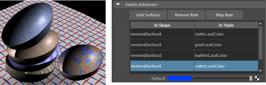
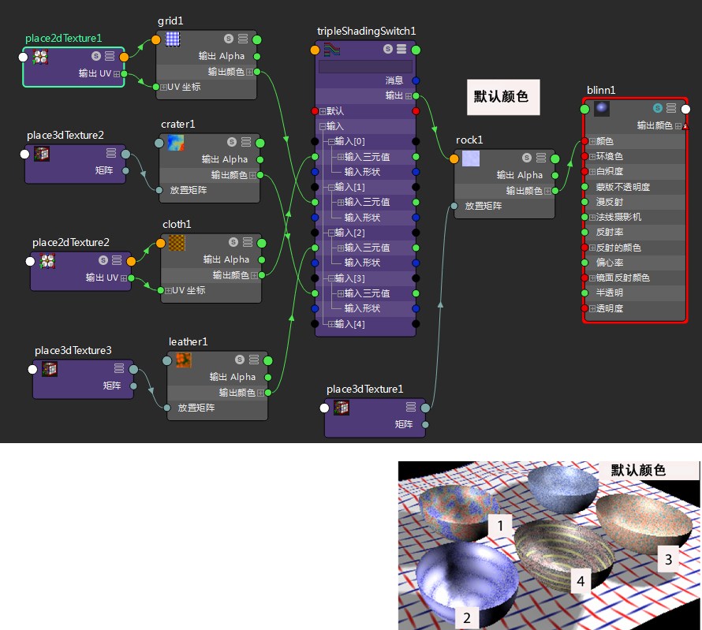

有关“三元值切换”(Triple Switch)工具的描述，请参见三元值切换。
允许您将不同纹理映射到场景中的多个对象。可以切换任意三重浮点属性，例如 RGB 输出颜色。
在下面的示例中，因为需要粒状纹理，所以最初将“岩石”(Rock)纹理映射到对象（类似于碗的简单旋转曲面）。其他映射到选定对象的纹理会在显示特定纹理属性的同时保留该粒状纹理。
使用“三元值切换”(Triple Switch)工具
- 创建材质并将其指定给场景中的所有对象。
- 在材质的“属性编辑器”(Attribute Editor)中，将纹理映射到“颜色”(Color)属性。

- 在纹理的“属性编辑器”(Attribute Editor)中，将光标置于其中一个“颜色”(Color)属性上，然后在弹出菜单的“创建新纹理”(Create New Texture)上单击鼠标右键。

- 在“创建渲染节点”(Create Render Node)窗口中，从“工具”(Utilities)类别中选择“三元值切换”(Triple Switch)。请注意，碗将丢失其初始颜色。使用“切换属性”(Switch Attributes)编辑器中的“默认”(Default)属性，可以将另一个纹理映射到对象，也可以更改颜色。

- 打开“大纲视图”(Outliner)，然后按住鼠标中键的同时将要显示另一个纹理的对象拖动到 inShape 列。

只对以下碗中的四个碗映射纹理。顶部的碗将保留“默认”(Default)颜色设置。

- 若要将纹理映射到其他对象，请在“inShape”列中单击亮显旋转曲面，然后选择映射项目(Map Item)按钮。

- 从“创建渲染节点”(Create Render Node)窗口为每个对象选择其他纹理。
以下显示了四个碗，并在“切换属性”(Switch Attributes)编辑器中显示了映射到碗上的纹理。

如有必要，可调整每个项目的纹理。以下内容可帮助您更好地了解如何将纹理映射到碗以及如何在“Hypershade”中显示连接。
